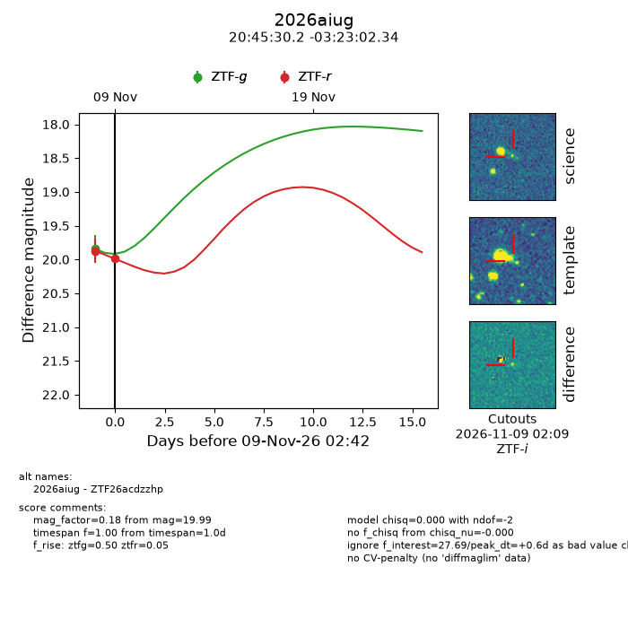
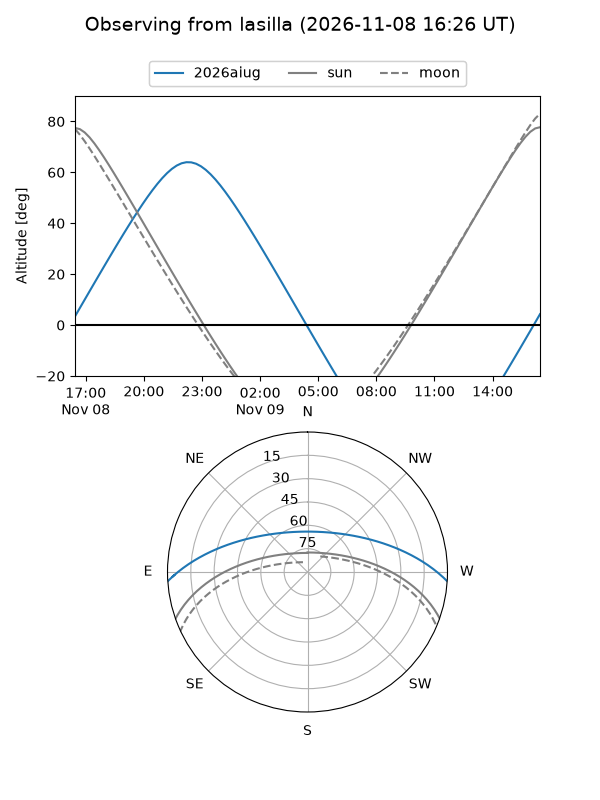
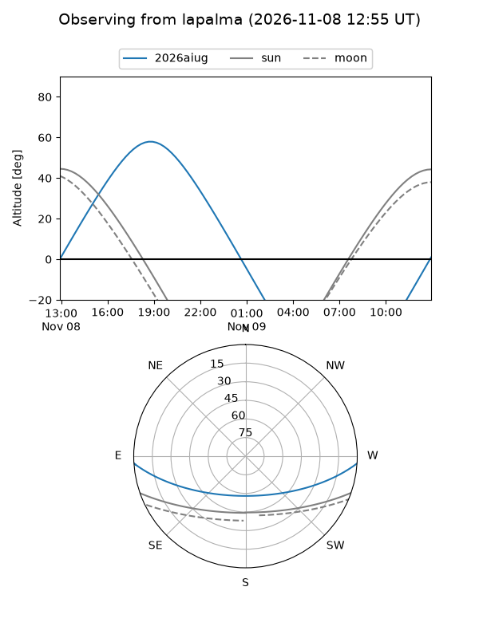
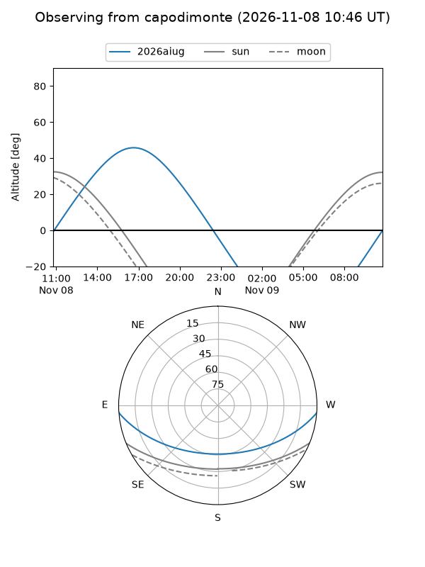
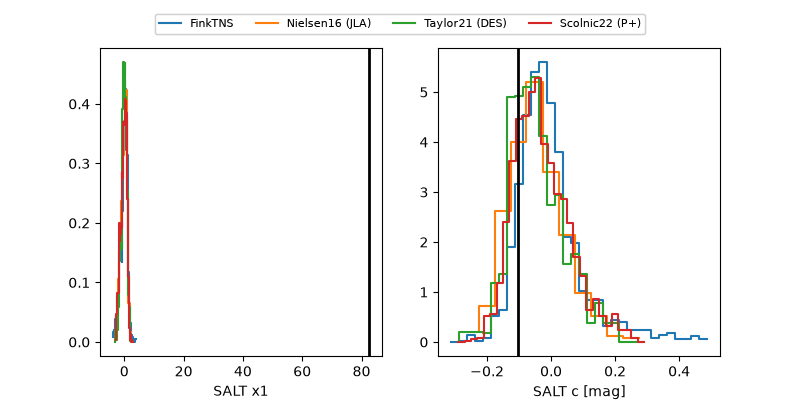

2026aiug
Target 2026aiug at 2026-11-09 02:45
Aliases and brokers:
FINK-ZTF: ztf.fink-portal.org/ZTF26acdzzhp
Lasair-ZTF: lasair-ztf.lsst.ac.uk/objects/ZTF26acdzzhp
ALeRCE-ZTF: alerce.online/object/ZTF26acdzzhp
YSE-PZ: ziggy.ucolick.org/yse/transient_detail/2026aiug
TNS name: wis-tns.org/object/2026aiug
Direct TNS query: direct search
alt names
ZTF26acdzzhp (ztf,fink_ztf)
2026aiug (tns,yse)
Coordinates:
equatorial (ra, dec) = 311.3760,-3.38398
equatorial (HMS+DMS) = 20:45:30.24,-03:23:02.34
galactic (l, b) = (43.5714,-26.81210)
Flags:
peak dt: +0.6
Photometry:
last ztfg=19.84, ztfr=19.99
1 ztfg, 2 ztfr detections
Lightcurve

Visibility



Additional plots
